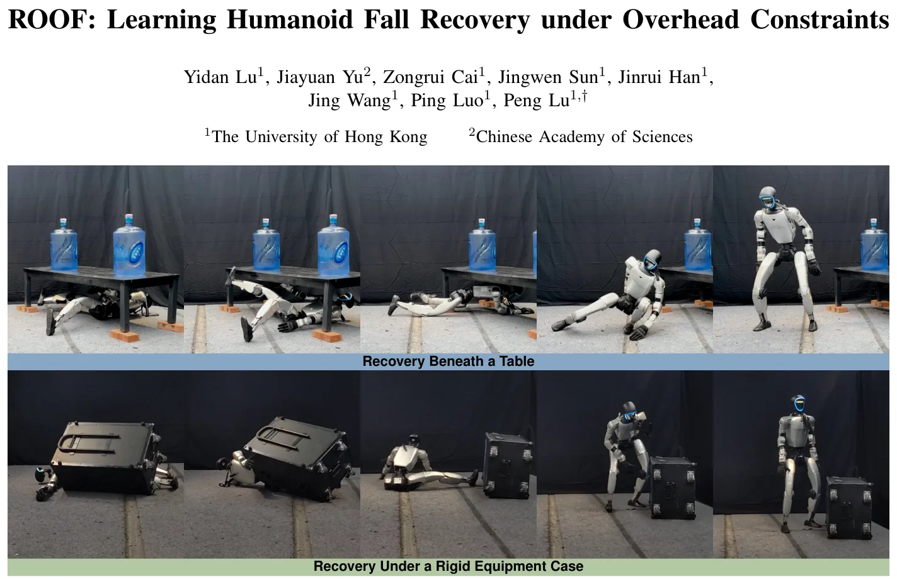
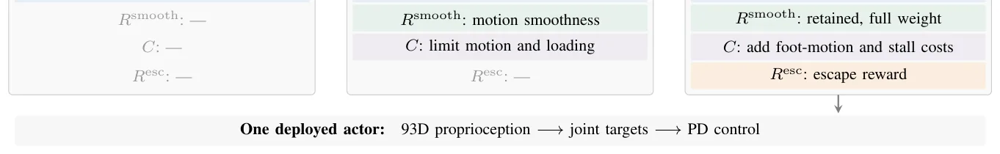
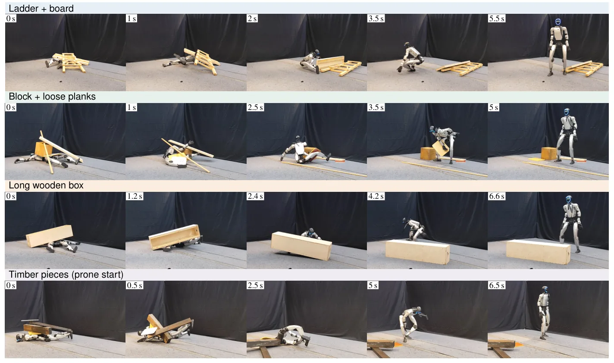

O Problema da Queda em Ambientes Restritos
A maioria dos trabalhos sobre recuperação de quedas em robôs humanoides foca em terrenos irregulares ou em levantar-se de posturas instáveis em solo plano. No entanto, existe um cenário crítico que frequentemente é ignorado: a queda sob obstáculos suspensos. Imagine um robô Unitree G1 caindo debaixo de uma mesa, uma prateleira ou uma caixa de equipamentos. O problema aqui não é apenas a inércia ou a fricção do chão, mas a restrição física imposta pelo teto do ambiente imediato.
Nessas situações, tentar executar um movimento padrão de levitação é contraproducente. Erguer o tronco antes de criar espaço pode empurrar o robô contra o obstáculo, aumentando a obstrução e travando o mecanismo. A recuperação torna-se um problema acoplado: o robô precisa simultaneamente criar folga (clearance) e organizar seus pontos de apoio para um levantamento estável. Se ele tentar se levantar sem antes se reposicionar ou interagir com o obstáculo, falhará.
Os controladores aprendidos anteriormente tornaram-se robustos em mitigação de quedas e locomoção, mas não abordam a dependência da cena para a escape. Um método que codifique uma direção de fuga específica ou uma sequência de contatos pré-definida precisaria ser redesenhado para cada tipo de obstáculo. A mesa fixa exige que o robô saia de baixo dela; a caixa móvel pode ser empurrada para o lado. Unificar esses comportamentos em uma única política é o desafio central deste paper.

A Abordagem ROOF: Guia Geométrico e Prior de Movimento
Os autores propõem o ROOF (Recovery Under Overhead Constraints), um framework baseado em Aprendizado por Reforço (RL) que utiliza uma política única treinada com PPO (Proximal Policy Optimization). A inovação principal não está na arquitetura do robô, mas na função de recompensa e na estrutura de treinamento. O objetivo é aprender quando criar espaço, como estabelecer apoio e quando completar o levantamento, utilizando apenas propriocepção (dados internos do robô) durante a execução, embora a geometria do obstáculo seja conhecida durante o treinamento.
O cerne da solução é o 'contact-supported geometric escape guidance'. Em vez de prescrever um caminho de fuga, o sistema recompensa a redução incremental da sobreposição entre o robô e o obstáculo. Isso permite que a política descubra por conta própria se deve deslizar para fora, empurrar o objeto ou uma combinação de ambos. O guia mede o progresso através da redução da interseção de formas de colisão projetadas no plano do chão.
Para evitar que o robô realize movimentos caóticos ou anti-ergonômicos enquanto tenta criar espaço, o método incorpora um prior de movimento humano fixo (SMP). Este prior, baseado em erros de previsão de difusão, incentiva movimentos coordenados que se assemelham a como um humano se levantaria. A pontuação do prior é multiplicada pelas recompensas de recuperação, favorecendo trajetórias naturais, mas sem forçar o rastreamento de uma trajetória de referência rígida que poderia colidir com o obstáculo.
Estrutura de Treinamento em Três Etapas
O treinamento não ocorre de uma só vez. Ele é dividido em três estágios para garantir estabilidade e transferência de conhecimento. No Estágio I (Básico), a política aprende a recuperação em solo plano, focando em objetivos de movimento ascendente e altura. Isso estabelece uma base fundamental de como o robô pode se levantar de posturas baixas.
No Estágio II (Refinamento), o sistema introduz custos dependentes da postura. O robô aprende a transicionar de deitado para em pé, com penalidades que aumentam conforme ele se aproxima da posição vertical. Isso inclui custos de suavidade de movimento e estabilização. A política começa a entender que movimentos bruscos perto da posição ereta são indesejáveis, aprendendo a 'se acomodar' antes de finalizar o levantamento.
O Estágio III (Adaptação) é onde a magia do ROOF acontece. Aqui, a política é exposta a obstáculos. Os objetivos do estágio anterior são mantidos, mas são adicionados o guia geométrico de escape e custos específicos de interação, como penalização por movimento dos pés durante a fase final de levantamento e por 'travamento' de juntas (joint-stall), que ocorre quando o robô aplica torque alto sem movimento significativo, indicando que está empurrando sem progresso.
Mecânica da Recompensa Geométrica
Como o robô sabe se está progredindo sem ver o obstáculo? A recompensa geométrica (R_geom) é composta por três termos: progresso suportado, folga densa e separação raiz-placa. O termo de 'progresso suportado' mede a melhoria na profundidade de penetração ou na separação desde o último passo válido. Se o robô está em contato com o obstáculo e move-se de forma a reduzir a interseção das suas caixas de colisão projetadas no chão, ele recebe uma recompensa positiva.
O termo de 'folga densa' verifica se o robô está em contato válido (força e penetração) e recompensa a redução do número de formas de colisão sobrepostas. Já a 'separação raiz-placa' incentiva o aumento da distância entre o centro de massa do robô e o obstáculo assim que o contato é confirmado. Esses termos são somados para formar o objetivo de escape (R_esc).
Importante: a recompensa não especifica a direção. Se a mesa é fixa, a política descobrirá que deslizar lateralmente reduz a sobreposição. Se a placa é leve e móvel, ela descobrirá que empurrá-la para o lado é mais eficaz. A política aprende a estratégia ótima para a cena específica baseada apenas no feedback escalar de 'estou criando espaço ou não?'.
Resultados em Simulação
A avaliação em simulação compara o método guiado contra uma baseline sem o guia geométrico. Em cenários com 'placas guiadas' (obstáculos que só podem ser levantados, forçando o robô a criar espaço lateral), o ROOF alcança uma taxa de sucesso de 88,5%. Sem o guia geométrico, a taxa cai drasticamente para 18,9%. Isso demonstra que a orientação geométrica é essencial para resolver o problema acoplado de criação de espaço e levantamento.
Em cenários mais complexos com 'placas livres', onde o tamanho, massa e posição do obstáculo são randomizados, o método atinge 98,6% de sucesso. A robustez vem da generalização da política, que não depende de parâmetros fixos do obstáculo, mas sim da interação física contínua. A inclusão do prior de movimento humano ajuda a manter a estabilidade durante essas interações imprevisíveis.

Validação em Hardware: Unitree G1
O teste mais convincente ocorre no hardware físico, utilizando um robô Unitree G1. O robô foi testado em sete cenas de obstáculos do mundo real, incluindo arranjos de móveis e múltiplos objetos que não foram vistos durante o treinamento. A política recuperou com sucesso em 95 dos 150 tentativas (63,3%).
A queda na taxa de sucesso em relação à simulação (de 88,5% para 63,3%) é esperada e revela as limitações do método. As diferenças de sim-to-real, como atrito não modelado perfeitamente, folgas mecânicas e ruído nos sensores, impactam a precisão das interações físicas. No entanto, o fato de o robô conseguir lidar com arranjos complexos e não vistos prova a capacidade de generalização da política baseada em propriocepção.
As imagens dos testes mostram o robô lidando com escadas, caixas de madeira e blocos instáveis. Em alguns casos, o robô precisa ajustar seu apoio repetidamente até encontrar uma configuração estável que permita o levantamento final. A política não falha catastróficamente; ela tenta, recua e tenta novamente, guiada pelo feedback de contato.

Limitações e Considerações Finais
O paper é honesto sobre as limitações. O método depende de um prior de movimento humano pré-treinado. Se o robô cair em uma postura extremamente rara que não tem analogia humana clara, o prior pode não oferecer a orientação mais eficiente, embora ainda assim seja melhor que nenhum prior. Além disso, a política foi treinada principalmente com um único obstáculo por vez. Cenários com múltiplos obstáculos interagindo entre si ou com o robô de forma complexa ainda representam um desafio aberto.
Outra limitação é a necessidade de contato. Se o obstáculo estiver posicionado de forma que o robô não consiga tocar nele para sentir a força (por exemplo, se estiver muito alto ou se o robô estiver preso de forma que suas mãos/pés não alcancem a superfície de contato), o guia geométrico perde eficácia, pois não há feedback de contato para validar o progresso.
Apesar disso, o ROOF representa um avanço significativo na direção de robôs humanoides autônomos que podem operar em ambientes humanos desordenados. Ao formular a recuperação como um problema acoplado de criação de espaço e levantamento, e ao usar recompensas geométricas densas, os autores mostram que é possível aprender comportamentos complexos de interação sem a necessidade de modelagem explícita de cada tipo de obstáculo.
O Que Levar Embora
A recuperação de quedas sob obstáculos não é apenas um problema de controle de equilíbrio, mas de planejamento de interação espacial. O ROOF demonstra que é possível unificar a criação de folga e o levantamento em uma única política de aprendizado por reforço. A chave está no guia geométrico que recompensa a redução de sobreposição sem ditar a rota, combinado com um prior de movimento humano para garantir estabilidade. Os resultados em hardware confirmam que essa abordagem é viável, mesmo com a transferência sim-to-real e obstáculos não vistos, embora a taxa de sucesso ainda tenha margem para melhoria frente aos ambientes reais ruidosos.
O que fica
- O ROOF resolve a recuperação de quedas sob obstáculos usando uma política única que acopla a criação de espaço físico com o levantamento, sem precisar conhecer a geometria exata do obstáculo durante a execução.
- O método utiliza um guia de recompensa geométrica que incentiva a redução da sobreposição robô-objeto, permitindo que a política descubra estratégias de escape (deslizar ou empurrar) adaptadas ao cenário.
- O treinamento em três estágios, combinado com um prior de movimento humano, garante que o robô mantenha estabilidade e coordenação mesmo durante interações físicas complexas com o ambiente.
- Em testes reais com o Unitree G1, a política recuperou 95 de 150 tentativas em cenários diversos e não vistos, demonstrando robustez, embora a transferência sim-to-real ainda apresente desafios.
Paper original: ROOF: Learning Humanoid Fall Recovery under Overhead Constraints
Comentários
Nenhum comentário ainda. Seja o primeiro.